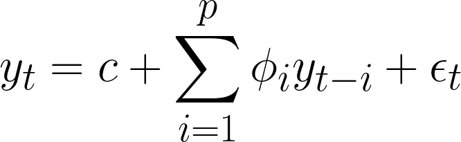
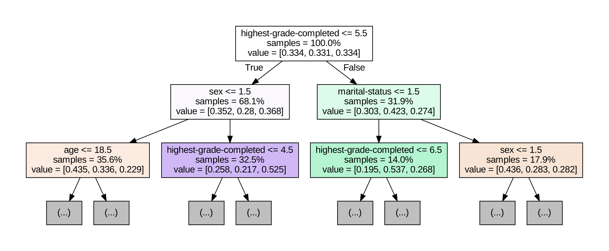
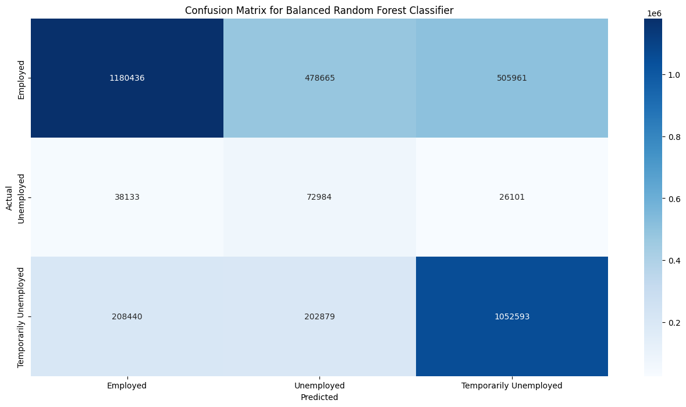
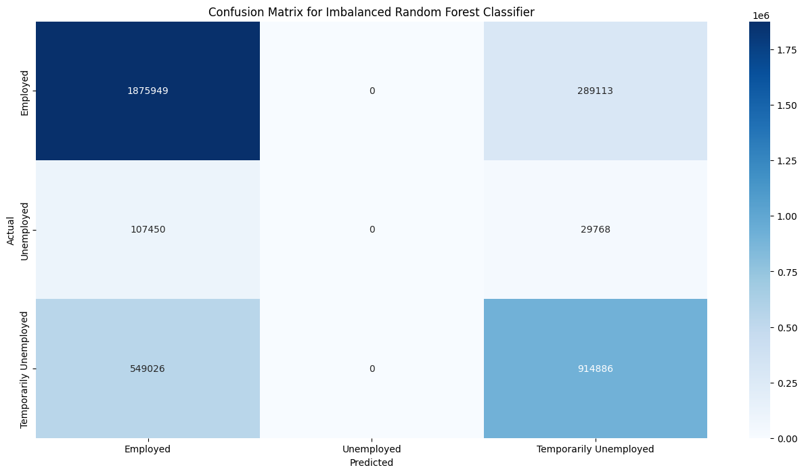

Team Ternary
SHS: Job Ready! or is it?
We, Ternary, have created a data science project which aims to study the correlation between the K-12 system along with other educational metrics and unemployment statistics in the Philippines.
The main tagline of senior high school was that students, after graduating, would be equipped with all of the necessary skills, and knowledge needed to survive in the real world and earn a decent living. DepEd claimed that graduates of the said program are “job ready” due to the choice of students being able to pick their career path in the form of different academic tracks (PNA, n.d.).
However, just less than a decade after its implementation, there has been a lot of debate as to whether or not it was an effective program or just a waste of 2 years that could have already been spent in college as well as the added burden to the already financially struggling average Filipino.
This study aims to determine if the K-12 system, highest educational attainment of the workers, and other related factors have a direct effect on the unemployment statistics in the Philippines.
The researchers will use data science on the collected data to gain insights regarding how the unemployment rate has evolved ever since the implementation of SHS in the Philippines’ education system and whether or not different factors contributed to it too.
On May 15, 2013, the late President Benigno S. Aquino III signed into law: Republic Act No. 10533 - An Act Enhancing The Philippine Basic Education System By Strengthening Its Curriculum And Increasing The Number Of Years For Basic Education, Appropriating Funds Therefor And For Other Purposes. Section 4 states that The enhanced basic education program encompasses at least one (1) year of kindergarten education, six (6) years of elementary education, and six (6) years of secondary education, in that sequence. Secondary education includes four (4) years of junior high school and two (2) years of senior high school education (Republic Act No. 10533, 2013)
This was one of the biggest changes in Philippine education as secondary education has, as far as anyone can remember, lasted only 4 years.
Fun fact: Before the change, the Philippines was only one of three countries implementing a 10 year pre-university cycle (basic education), with the other two being Angola and Djibouti.
Today, the DepEd is currently reviewing its curriculum, and a new curriculum pilot run is targeted to be done in 2025 (Manila Bulletin, 2024).
How has the implementation of SHS affected the unemployment rate in the Philippines?
What are the factors that can affect the employment status of an individual?
The implementation of SHS yielded a dip in the unemployment rate over the years.
The implementation of SHS did not yield any difference in the unemployment rate over the years.
Analyze the data of the Labor Force Survey conducted by the Philippine Statistics Authority from 2016 to 2023 specifically on unemployment.
The microdata of the available datasets were downloaded from the PSA catalog website. As of the time of the data collection, the most recent available microdata was of March 2023. The dataset used in the research was derived from the mentioned microdata by the following steps: 1. After being downloaded, the microdata were then unzipped and each folder was placed in another folder. 2. The researchers then created a Python script (found here), and using the pandas module, added a year-surveynum column to each of the microdata, wherein year is the year of the survey and surveynum is the survey number of that year. 3. After adding that column, each .csv file was then filtered based on the Employment Status (Based on New Criteria on Unemployment) or the PUFNEWEMPSTAT, wherein if a sample had a “2” on the column, it indicated unemployment. As the column title of each .csv file was inconsistent, each differing column title was then renamed to “PUFNEWEMPSTAT,” and from there, filtered if they are equal to 2. 4. Once the dataset was filtered, they are then saved to a separate indiviual .csv files. 5. After being separated to individual .csv files, they were then transferred to another folder, and the researchers created another Python script (found here), and inserted in the unemployment rate of that given year and survey number and the associated grade number of their highest grade associated. 6. Other columns were also renamed for the sake of consistency. The .csv files were then filtered down to the necessary variables using pandas and were saved to separate .csv files. 7. The online tool Merge CSV files Online was used to combine the .csv file 8. The merged .csv file was then uploaded to GDrive. 9. Because it cannot be opened properly in GSheets, the merged .csv file was then split using the online tool: Split CSV and each individual csv file was placed in its own GSheet. 10. Using the pandas module in a google colab, the columns PUFC26_WYNOT and PUFC38_PREVJOB were removed using the del operation. 11. Each column was then renamed using a more understandable indicator of their name. 12. Rows with empty values were then removed from the dataset. 13. The dataset was then sorted based on the year-surveynum column 14. The year-surveynum was then renamed to be based on quarters 15. The subsequent unemployment rate was changed to correspond to the quarter's unemployment rate
The microdata of the Labor Force Surveys (LFS) dated January 2016 to March 2023 were collected from the central data catalog of PSA. They were then processed under the procedure mentioned in the data preprocessing section. Data collection was done from the middle of March to the end of March 2024. The unemployment rates of the quarters / years were collected from the following reports given by the PSA. The following links are the survey results from the PSA website. [1], [2] [3], [4], [5], [6], [7], [8], [9], [10], [11], [12], [13], [14], [15], [16], [17], [18], [19], [20], [21], [22], [23]
For this study, the relevant data features are:
Region, Rural Classification, Relationship to Household Head, Sex, Age as of Last Birthday, Marital Status, Highest Grade Completed, Reason for not Looking for Work, Previous Occupation, Employment Status
They were mainly chosen due to their relationship with regards to the research question as important variables that may contribute to the unemployment status of an individual.
Manila Bulletin. (2024, February 19). DepEd eyes pilot run of new SHS curriculum in SY 2025-2026. Manila Bulletin. https://mb.com.ph/2024/2/19/dep-ed-eyes-pilot-run-of-new-shs-curriculum-in-sy-2025-2026
Official Gazette of the Republic of the Philippines. (n.d.). K to 12 Basic Education Program. https://www.officialgazette.gov.ph/k-12/
Philippine News Agency. (n.d.). https://www.pna.gov.ph/articles/1022415
Ferron, J., & Rendina-Gobioff, G. (2005). Interrupted Time Series Design. Encyclopedia of Statistics in Behavioral Science. https://doi.org/10.1002/0470013192.bsa312
Regis, F. (2022). xboard.dev - Interrupted Time Series (ITS) in Python. Xboard.dev. https://www.xboard.dev/posts/2020_01_01_interrupted-time-series-python-part-I/index.html
Locus, S. (2024). PSA: Smaller percentage of women in labor force. GMA News Online. https://www.gmanetwork.com/news/topstories/nation/899211/psa-smaller-percentage-of-women-in-labor-force/story/
A line graph of the unemployment rate from quarter 1 of 2016 until quarter 1 of 2023 is shown. The outlier data from the COVID-19 pandemic was removed. They consisted of the second, third, and fourth quarters of 2020 and the first quarter of 2021. From this data, employed data and retired people's data were also removed from the plotting in order to mainly focus on the unemployed.
To determine what are the other factors that can affect the employment status, a violin plot and heat map were utilized. Only the most recent quarter (quarter 1 of 2023) was taken into account, as this represents the status of employment in the country that we have today. Data of legal working age were only taken into account in this visualization, ranging from ages 15 - 64.
Note: Temporarily Unemployed refers to individuals neither employed nor unemployed. These also include persons not available and are not looking for work such as housewives, students, and disabled persons.
Most employed persons are in the range of 20-50, the typical age for work. Majority of those who are not part of the labor force are at the youngest end of the spectrum. Finally, though might not be obvious, if we look closely (by hovering) at the unemployment rate per age it actually decreases as we go older starting at age 22-23 (the age of graduation).
The plot shows how the highest education attainment relate with the number of people in employment status
Most married and separated people are employed as expected . However, there are also a number of them who are not part of the labor force (possibly housewives / house husbands), we can also see the same observation to widows, though the frequency might be less. Single people also comprise most of those who are not part of the labor force (can be students). In this survey, those whose marriages were annulled were either employed or not part of the workforce.
As you can see from the plots, notice how sparse (and blue for age) our data is on unemployment. It means that the majority of Filipinos are employed. However, let's zoom in on the unemployment data solely and see what factors impact most here.
The plot shows that the percentage of unemployed individuals are mainly men. This can be linked to men being the majority in the workforce (Locus, 2024).
Despite NCR being the center of the economy, and with the popular belief that people come here for employment, most unemployed individuals reside here. It comprises a fifth of all unemployed persons (20%). The second most is in Region III (or Central Luzon), which has less than half of unemployed residents in NCR, with just over 9%.
The plots show that unemployed individuals are more likely to be in urban areas. Notice how we have shown in the previous plots that the majority of employed persons in all of the regions live in rural areas.
The plot shows that single individuals are more likely to be unemployed. This may be related to how financial stability is needed in a relationship, hence why less individuals are unemployed in marriage.
Unemployment is highest in the age group 20-24. This can be expected as most people would be fresh graduates from college, just entering the workforce and looking for a job.
The plot shows that College and JHS graduates are more likely to be unemployed with them comprising more than half of the unemployed sample. College graduates are expected, as mentioned before in age and unemployment, most of them are just about to enter the workforce, What is interesting is in JHS graduates, seems most of them would rather enter the workforce and try to find a job, rather than to continue studying in Senior High which should, in theory at least, make them job ready.
An interrupted time series (ITS) was used in performing the hypothesis testing. It is a statistical test that aims to examine the effect of an intervention (Ferron & Rendina-Gobioff, 2005) within a population / group. An intervention is defined as a controlled external influence or set of influences (Regis, 2022). To determine the effect of an intervention, the changes in level and slope of the time series and the statistical significance of the intervention parameters are evaluated.
The hypothesis testing used two different models, OLS and ARIMA.
OLS is particularly good for simpler cases wherein there is no autocorrelation between data points. Whereas ARIMA is a more complicated model that is better for variables with autocorrelation.
In OLS, there are 4 key variables in a time series equation and it can be represented as:
Where:
Y: outcome
T: time since start of observation period
D: indicates if period of time is before or after intervention
P: amount of time since intervention began
In ARIMA, these are the key variables:
Where:
yt: observation at time t
yt-i: observation at time t - i
ϕi: coefficient of how much yt correlates to yt-i
ϵt: white noise at time t
In this study, two interventions were chosen, the K-12 graduation of the first batch of SHS students and the COVID-19 pandemic. As there was a sudden spike of unemployment during the start of the COVID-19 pandemic, it was considered as outliers and the 4 quarters following the start of the COVID-19 pandemic, including the starting quarter, were removed from the analysis of the K-12 graduation intervention period. However, they were retained for the analysis of the COVID-19 pandemic.
The results of ITS can be checked in Results
The machine learning algorithm used was the random forest classifier. It is a model that is best suited for classification and regression. In this case, it was used for classification. It consists of multiple decision trees that provide their input to the data's possible output. The result that is most given from the decision trees will be what is predicted.
Here is an example of what the first 3 decision trees look like:
A Durbin-Watson statistic score of 0.911 implies that there is a positive autocorrelation present in the data. Hence, we will use ARIMA because it is better suited for this analysis.
The counterfactual (black dots) represent what the unemployment rate would be, if our intervention (in this case, graduation of K-12 students) did not happen. It shows that, apart for some quarters, the actual unemployment rate is close to the counterfactual. ITS on this intervention yielded a large P>|z| (or our p value) to be equal to 0.963 and therefore the effect is not statistically significant.
A Durbin-Watson statistic score of 1.874 implies there is a close to negligible autocorrelation in the data. Hence, OLS can be used.
The counterfactual (black dots) represent what the unemployment rate would be, have our intervention (in this case, lockdown due to COVID-19) not happened. It shows how far off the unemployment rate was from its predicted value (no lockdown). As over time and restrictions ease however, we can see the unemployment rate come closer to its predicted number. Nevertheless, the model estimates that the employment rate increased by 8.15%. ITS on this intervention yielded P>|t| (or our p-value) to be virtually 0 and therefore this effect is statistically significant. Interestingly, the model estimates a small (on average 0.77%) but with a statistically significant trend of a decrease in employment rate each quarter after the intervention. This can be attributed that even though there was a stark rise in the unemployment rate after the intervention, after this the rate continued to decrease and decrease, eventually reaching pre-pandemic levels
The model first produced a result accuracy of 74.10%. However, the confusion matrix for this stage of the model is presented as follows
It can be observed that there was absolutely no prediction done for unemployment. This is due to the data being heavily skewed towards employed and temporarily unemployed individuals. As the number of unemployed individuals is significantly fewer than those two, it leads to the results of unemployed individuals being heavily ignored.
Hence, there was a need to balance the data that is to be provided to the machine learning model. Using sk_learn's class_weight property to balance the data, it provided an accuracy of 61.23%, with a more balanced confusion matrix.
Due to the effect of the lockdown caused by the pandemic, it is challenging to determine directly whether or not the implementation of SHS has affected the unemployment rate in the country. To address this, the researchers removed 1 year (Q2 2020 - Q1 2021) from the analysis. With the graduation of the first SHS batch as in intervention, an ITS analysis reveals that there was no significant effect after this intervention. However, if we take into account the removed quarters, our question changes to: How did the COVID-19 pandemic affect the unemployment rate? If we run another ITS test to answer this question, with Q2 of 2020 as an intervention (start of the lockdown), as expected there is a significant relationship (unemployment increases). However contradictingly, the trend decreases over time (as restrictions and lockdown ease).
The researchers focused on employment status in the first quarter of 2023, revealing several expected trends. The majority of the labor force is between 20 and 50 years old and predominantly married or divorced. In terms of educational attainment, employed individuals are mostly men, with varying levels of education. Regionally, except for the National Capital Region (NCR), most employed people live in rural areas. This finding might be surprising given the common belief that urban areas offer more job opportunities, but it aligns with the fact that a large portion of the country is rural.
When examining unemployment, the data shows that most unemployed individuals are men, reflecting their larger presence in the workforce. NCR has the highest number of unemployed people, suggesting that urban areas attract job seekers. This contrasts with the employment data, where rural areas have more employed individuals. The unemployed demographic is primarily single individuals aged 20-24, likely recent graduates or those seeking financial stability before marriage. Over half of the unemployed have completed college or junior high school (JHS). The high number of JHS graduates entering the workforce might indicate skepticism about the effectiveness of senior high school (SHS) programs in preparing them for employment.
The project focused only on employment status and did not take into account the aspect of income / nature of work. Hence, this cannot be used to find out how employment relates to the economic status of Filipinos.
The study is also limited to the data currently available at the time of writing - Q1 of 2023.
Based on the ITS test and different plots made, we can imply the following that there is no significant relationship between the unemployment rate and the implementation of the SHS program.
However, from the plot of highest education level based on unemployed persons, a lot of unemployed persons are Junior High School completers. This can show that people who would not / cannot go to college, would rather try and get a job with their JHS diploma rather than enter SHS - a program designed to make them job ready.
Additionally, with the exception that most employed persons live in rural areas, most of the demographics of employed persons were expected (age 20-50, married / divorced). Majority of employed persons are males, whose highest educational attainment differs and NCR, despite being regarded as the heart of the nation's economy, has a lot of unemployed persons living there.
Lastly, the pandemic significantly increased the unemployment rate, however, the trend is continuously decreasing with levels of unemployment rate matching pre-pandemic levels / their predicted rate should the pandemic have not happened.
Although there was no significant relationship found between the unemployment rate and implementation of SHS, more studies can find out on the people's perception about the effectiveness of SHS in helping JHS graduates find a job. Perhaps people's mindset behind SHS may also have an effect in employment of individuals, whether it be employers or the employees themselves.
More studies can also focus and investigate the high unemployment rates in the urban areas, and low unemployment rates in rural parts of the country - contrary to the common belief Filipinos know is that jobs are usually found in highly urbanized areas / cities.
As the latest data of this study was from the first quarter of 2023, the data may still be skewed due to the pandemic, despite being a few years after its occurrence. Perhaps allowing the Philippines more time post-pandemic to settle may bring more fruitful results.
In conclusion, no significant relationship between the implementation of the Senior High School (SHS) program and unemployment rates, though the COVID-19 pandemic significantly increased unemployment, which later decreased as restrictions eased.
Employment trends revealed most employed individuals are men, married, expected to be in the workforce (in terms of age), live in rural areas, and have different levels of education completed.
Future research should explore the effectiveness or perception of Filipinos SHS in job preparation and the reasons behind higher urban unemployment rates.
Other factors that could impact unemployment could also be explored.
We are named Ternary because we are three in this group.